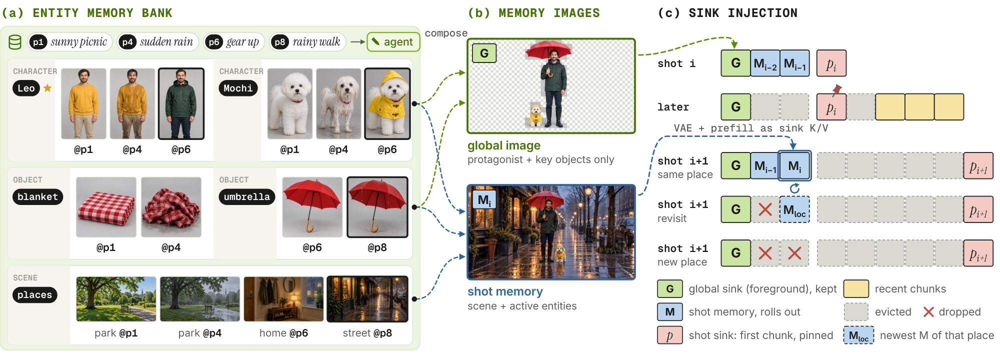

Paper Notes
01 · The Online Constraint
通常的多镜头系统可以先看完整剧本、逐镜头规划并重做失败片段。这里的输入不同：提示 p_i 在第 i 个镜头开始时才揭示，已生成的视频不能回滚。模型既不知道下一步情节，也不能让播放等候复杂的记忆推理。论文的主线因此是满足因果性和时限的记忆系统，而不是重新训练一个更大的视频生成主干。
生成器的近期 KV 缓存提供短时连续性，却不能自动成为完整的实体档案。人物换装、物体损伤和离开后重访地点，都要求保留比最近几个视频块更长的状态。注意区分“保留所有旧帧”与“记录当前仍成立的事实”：旧外观也可能成为错误条件。
Paper Notes
02 · From Entities to Attention Sinks

Shaoteng Liu et al., 2026. Original figure; arXiv perpetual non-exclusive license (not a general reuse license). Reproduced for focused scholarly commentary. · Paper & Caption ↗
原图左侧是实体库：人物、物体和场景分别保存文字描述、图像以及状态变化的来源提示。新提示引入持久变化时，基于已有实体图进行编辑；姿态和即时动作留给当前提示。这样一个实体能够经历多次更新，而非每次从文字重新生成一个外观近似但身份不同的对象。
中间将实体资料编排为两种视觉条件。G 表达主人公和关键物体的身份及当前状态；M 表达场景与活跃实体的组合。二者承担不同功能：前者需要持续可见，后者帮助镜头起始，但不宜永久固定布局。这里保存的图是代理根据提示维护的参考，不是从生成视频回采的帧。
右侧是进入模型的实际路径：参考图经冻结 VAE 编码，并预填充为 attention sink 的 K/V。镜头开始时注入全局参考和镜头记忆；生成推进后，镜头记忆退出，保留全局参考、镜头首块与近期块。因此模型既能读取身份参考，也不必一直复制旧场景构图。MiniMax-H3 的 G 使用去背景前景，LongLive-2.0 的实现保留完整 G，不能把两种配置混为一谈。
场景路由进一步决定读取什么：仍在同一地点时延续近期镜头记忆；重访时取该地点最近的记忆；新地点则移除旧场景参考，仅保留 G。此外，把提示中点名实体的状态写成 entity cards 加入文字条件。图像和文本两条通道都属于完整系统。
Paper Notes
03 · Asynchrony and the Meaning of Memory
在生成上一镜头时，代理已经更新实体库、合成记忆图，辅助进程负责解码和 KV 预填充。镜头边界只切换到已经完成的版本；新版本来不及完成，就使用最近一次提交的版本。这里的核心工程安排是把昂贵处理移出生成器的等待链，而不是让代理本身变得没有开销。
主实验的代理只读取已经揭示的提示，不观察生成视频。这能避免把视频中的漂移重新写入实体库，但也意味着它记住的是叙事意图，不是视频实际执行的状态。如果提示要求换装而视频没有做到，主系统不能通过观察发现这个偏差。附录机器人实验另行研究了读取视频的闭环版本，应与主系统区分。
可写为 v_i=F(p_i,KV_i,m_i)，而 m_i 只依赖此前提示和已提交记忆。当前提示第一次引入的新状态尚未进入预先准备的图，可能要到后续镜头才反映。时限、因果性与状态新鲜度之间存在明确取舍，并非“有记忆就能立即跟上所有变化”。
Paper Notes
04 · What the Planner Learns
论文训练的是小型语言模型的记忆规划策略，视频生成器、图像生成器及评判模块保持冻结。规划器接收实体文字状态、最近四条提示与槽位预算，输出结构化的状态更新、绘图安排以及 G/M 成员选择。全局图最多三个成员，镜头图最多四个成员；这是视觉摘要的容量约束，不能解释成整个实体档案恒定大小。
训练先进行教师轨迹与拒绝采样得到的监督微调，再用 GRPO。奖励同时衡量持续事实、图中实体是否可辨认、精确性与状态保留，并惩罚幻觉或格式问题。未来若干镜头的标注仅进入训练奖励，不能进入在线策略输入。这是用事后信息学习事前选择，不等于推理时提前知道剧本。
图像奖励的权重根据下游视频表现校准，RL 循环并不每次生成整段视频。这个设计节省训练成本，但也留下代理目标与最终视频之间的间接性。消融尤其重要：已有图像和 entity cards 时，加入 RL 的若干提升没有达到显著性；不能将完整系统的大幅收益都归因于 RL。
Paper Notes
05 · Evidence and Resource Accounting
LongStory-Online 包含 25 个故事、857 个镜头，提示逐个揭示，禁止失败重生成和择优挑选。状态、身份、地点等由视觉语言评判器测量，并采用以故事为单位的 bootstrap。重访一致性以两次都到达正确地点为前提，是条件指标；应和地点正确率一起读。
在 LongLive-2.0 上，原模型到完整系统的持久状态准确率为 38.2→64.5，身份为 44.1→89.0，地点为 68.8→98.0，重访一致性为 15.0→55.4。数值来自作者评测，不是本站复现。它们回答的是该协议下长期状态是否改善，不能直接当作通用视频质量分数。
成本不能只报“约 1%”。H100 测试中，基础系统使用两张 GPU，完整系统使用六张：生成、辅助解码与预填充、代理各自占用资源。每段 10.5 秒视频生成时间约 15.8→16.0 秒，额外延迟小，但这组配置没有达到实时播放速度。34.3 FPS 的实时结果属于 B200 优化配置。
消融显示，始终使用最后一张场景图会严重损害地点切换；entity cards 单独能改善身份，却不能替代场景图的重访作用。读哪一份历史、文字与图像各自携带什么，比“是否加一个 agent”更接近论文有效机制。
Paper Notes
06 · Failure Modes and Reading Perspective
附录报告，LongLive-2.0 整体构图匹配改善，但计划近景的匹配率从 75.5% 降至 63.7%。记忆图多为完整实体的中远景，生成器会被拉向相似景别。当前提示想改变镜头，而历史参考强调稳定身份，两种条件可能竞争。
主系统还面临状态滞后、重访图含有旧外观、地点参考阻碍新场景等问题。对不同生成器，记忆 KV 是否依赖当前文本会改变能否提前预填充；不能假设换一个 backbone 就保留相同延迟。论文也没有证明在单 GPU 或相同总算力下获得同等收益。
与此前流式重建记忆的阅读联系，是将“事实档案”与“模型本次可读取的摘要”分开。但生成参考允许合成图像，几何重建应以真实观测为证据，不能把这一写入方式直接迁入 LingBot-Map。值得借鉴的是状态版本、检索路由和时限下的读取协议，而非拿合成参考替代几何。
Discussion
Reading Questions
Does low latency mean low cost?
不等价。代理和预填充使用额外 GPU 并行运行，减少的是生成关键路径的等待；应分别报告 GPU 数量、吞吐和总计算。
Does the main agent verify generated events?
不验证。主实验代理只看已揭示提示；附录闭环机器人应用另有视频观测。
Is reinforcement learning the main source of improvement?
完整系统包含图像记忆、场景路由和 entity cards。图文组合已有明显收益，加入 RL 的部分增量不显著，需要依据消融归因。
References
Figure 3 is reproduced without modification for analysis of its mechanism. Copyright remains with the authors. This note reports paper evidence; no local reproduction was performed.
Verified on 2026-11-27. Paper results refer to the linked versions. Official paper metadata was checked on this date.